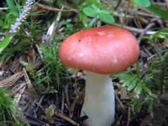
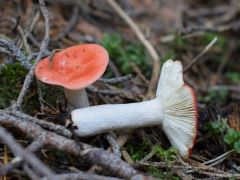
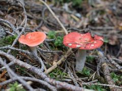

Hánytató galambgomba
 Nem ehető
Nem ehető
Kalap: 4-10 cm átmérőjű, élénk vérvörös, cseresznyepiros, ritkán okkerfoltosra kifakul. Felülete nedvesen nyálkás, fényes széle idősen kissé bordás.
Lemezek: fiatalon fehérek, majd krémfehéresek.
Tönk: fehér.
Hús: fehér, a kalapbőr alatt vöröses, törékeny, idősen puha. Kelemes gyümölcsillatú, égetően csípős ízű.
Termőhely és idő: VII-XI; nedves, erősen savanyú talajú fenyőerdőkben, lápokon, különösen luc alatt. A forrás szerint hazánkban még nem találták.
Étkezési érték: mérgező.


